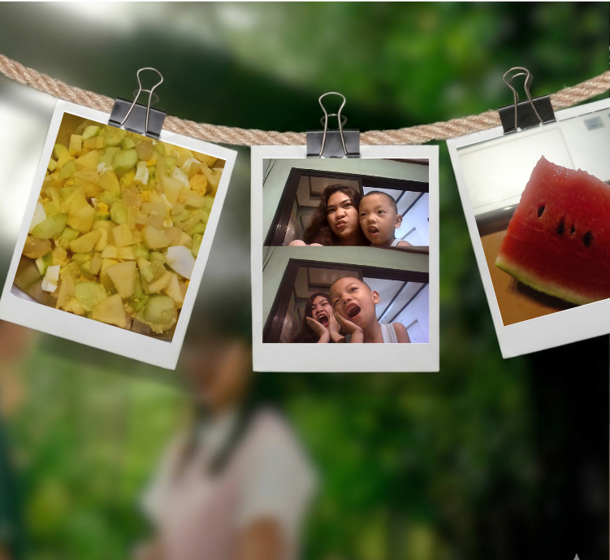

← Back to Portfolio
If Day 1 was all about rest and calmness," Day 2 was a crash course in reality. I expected a continuous happiness. Another day, and still no internet at home! So, I had to go pack my things and head to my Lola’s house to finish all my remaining and new activities. As much as I wanted to just stay home and relax, I really need to finish all my works. The day went smoothly with the internet's constant connection. I have finish almost all my activities except this one haha. I’m still a bit stressed about uploading our project to GitHub. My partner and I both had a hard time yesterday from internet connection and power outage, so we’ve basically been cramming all day. We’ve had a lot of trouble, but I really hope we can successfully pass it on time. So far i have enjoyed my day even though i'm busy we got to make salad with my cousins and spent more time while eating and laughing. It was the perfect break from all the stress. And of course, I got to hang out with little ZK again. That's basically how my day go simple yet happy.